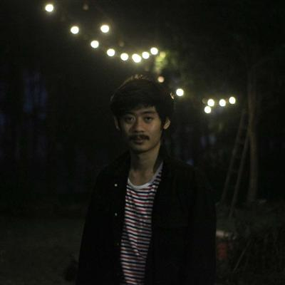
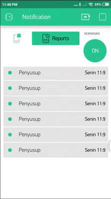
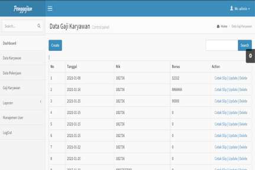
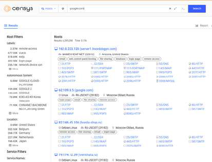

Lulusan S1 Teknik Informatika yang berfokus pada pengembangan aplikasi web, integrasi API, manajemen server, dan otomasi sistem. Berdedikasi menghadirkan solusi teknologi yang andal, efisien, dan aman guna menunjang operasional organisasi.

Saya memiliki minat mendalam dan pengalaman praktis dalam dunia teknologi informasi. Sejak menempuh pendidikan Sarjana Teknik Informatika di Universitas Widyatama (2017-2021), saya terus mengasah kemampuan teknis di bidang pemrograman web, scripting otomatisasi, serta administrasi sistem/server.
Dalam peran saya sebelumnya sebagai Asisten Dosen, saya terlatih untuk menganalisis masalah teknis, mendokumentasikan sistem, dan menjelaskan konsep rumit secara sederhana. Sebagai Freelance IT & Web Developer, saya telah berhasil mendesain arsitektur web berbasis CMS maupun custom framework, mengintegrasikan berbagai API (seperti Bot Telegram untuk otomasi), serta memelihara performa dan konfigurasi keamanan dasar server (VPS/Linux/WAF) agar sistem berjalan tanpa kendala.
Membangun antarmuka web yang dinamis, responsif, dan interaktif serta backend yang andal.
Instalasi, konfigurasi, dan optimalisasi server Linux untuk hosting aplikasi web.
Mengotomatiskan pekerjaan rutin dan mengintegrasikan layanan menggunakan skrip.
Mengkonfigurasi proteksi jaringan dan mengoptimalkan performa akses web.
Aplikasi pengukur kesehatan untuk melacak berat badan, menghitung metrik kesehatan tubuh (seperti IMT/BMI), serta memantau perkembangan fisik secara periodik.
Menunjukkan keahlian pengembangan aplikasi mobile yang user-friendly dan sangat relevan untuk digitalisasi layanan kesehatan di rumah sakit.

Perancangan aplikasi Android terintegrasi dengan sensor fisik IoT untuk memantau kehadiran orang di dalam ruangan secara real-time.
Menggunakan NodeMCU ESP8266, sensor gerak PIR, dan Firebase untuk sinkronisasi data yang cepat.

Sistem informasi administrasi penggajian karyawan untuk kalkulasi gaji, tunjangan, dan rekapitulasi data keuangan bulanan divisi HR.

Analisis untuk mendeteksi dan memitigasi kebocoran alamat IP internal server menggunakan database Censys API guna mengamankan aset domain web.
Siap berkontribusi secara profesional di bidang Software Development, System Administration, dan Solusi Teknologi Informasi.
Hubungi SayaMempelajari teori dasar ilmu komputer, algoritma pemrograman, jaringan komputer, rekayasa perangkat lunak, dan basis data. Lulus dengan pemahaman praktis yang kuat.
Fokus pada bidang Matematika dan Ilmu Pengetahuan Alam, melatih logika analitis yang menjadi dasar kuat untuk bidang Informatika.
Mengembangkan dan mengelola website custom, mendesain dan mengimplementasikan integrasi API, membuat Telegram bot untuk otomasi sistem, serta memastikan performa server (VPS/cPanel) berjalan efisien dan aman.
Membantu dosen dalam proses penilaian tugas mahasiswa, membimbing sesi praktikum laboratorium komputer, serta membantu penyusunan materi ajar pemrograman dan IT.
Silakan hubungi saya melalui detail kontak di bawah ini atau kirimkan pesan langsung melalui formulir kontak.
Jl. Linggarjati VI No.10, Parupuk Tabing, Kec. Koto Tangah, Kota Padang, Sumatera Barat 25586